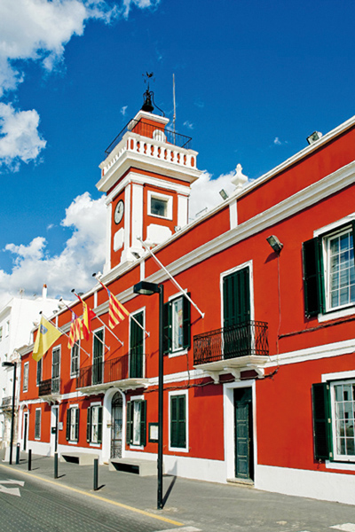

Es Castell, herència britànica
A uns dos kilòmetres de Maó s'hi troba Es Castell, població més oriental de Menorca i, per tant, d'Espanya. Situat en la bocana del port de Maó, entre Calesfonts i Cala Corb, el poble compta en l'actualitat amb una població d'uns vuit mil habitants.
Es Castell nasqué a l'ombra de la majestuosa fortificació del Castell de Sant Felip (1555), del qual prové l'actual nom, i que, avui en dia es troba en ruïnes. Una visita a les seves galeries subterrànies posa de manifest la grandiositat que la fortificació tingué, i fins a quin punt va ser cobejada per les grans potències europees del segle XVIII.
El poble fou fundat l'any 1771 pels anglesos durant la segona ocupació britànica (1763-1782). Es Castell o Georgetown, com el denominaren en la seva fundació, fou dissenyat per l'enginyer militar escocès Patrick Mackellar (1717-1778); el traçat del poble respon al model de l'urbanisme britànic de la Il•lustració, basat en l'homogeneïtat i la regularitat de la quadrícula pròpia de l'urbanisme militar de l'època. El 1782 tingué lloc el desembarcament hispà-francès que suposà la rendició dels anglesos i el domini espanyol, firmat pel Tractat de Versalles (1783) i fou a partir de llavors que es canvià el nom originari del poble pel castellà Real Villa de San Carlos (posteriorment abreviat per Villa-Carlos) en memòria del monarca espanyol regnant Carles III. Finalment, l'any 1984 s'adoptà el nom popular d'Es Castell, en referència al Castell de Sant Felip. La gran esplanada o plaça d'armes era el punt neuràlgic del poble, rodejat per espectaculars edificis militars i l'Ajuntament (1796). Aquests quarters militars, ubicats estratègicament en el centre del poble, estaven destinats a habitatges per a la tropa i els oficials; temps enrere tots aquests majestuosos edificis, pintats amb un estil rogenc, impressionaven, com avui en dia, als visitants que entraven dins la plaça.
 La zona costanera més important d'Es Castell ha estat i segueix essent, sens dubte, Calesfonts, situada en un antic barranc anomenat S'Hort des Milord. Rep aquest nom en virtut de les dues cabaloses fonts que brotaven en la cala, ubicades a prop de la pujada empedrada que conduïa al poble. Des de temps immemorials, aquesta rada del port tingué una gran importància com a punt d'abastiment d'aigua per als vaixells que arribaven a l'illa. Cal destacar, també, la gran importància que adquirí Calesfonts en la construcció d'embarcacions. Allà, els fusters de ribera construïren una bona part dels anomenats bots palangrers, bots dedicats a la pesca del palangre, originaris de Menorca, que foren utilitzats pels pescadors de la zona de llevant per a la pesca en les aigües de l'arxipèlag.
La zona costanera més important d'Es Castell ha estat i segueix essent, sens dubte, Calesfonts, situada en un antic barranc anomenat S'Hort des Milord. Rep aquest nom en virtut de les dues cabaloses fonts que brotaven en la cala, ubicades a prop de la pujada empedrada que conduïa al poble. Des de temps immemorials, aquesta rada del port tingué una gran importància com a punt d'abastiment d'aigua per als vaixells que arribaven a l'illa. Cal destacar, també, la gran importància que adquirí Calesfonts en la construcció d'embarcacions. Allà, els fusters de ribera construïren una bona part dels anomenats bots palangrers, bots dedicats a la pesca del palangre, originaris de Menorca, que foren utilitzats pels pescadors de la zona de llevant per a la pesca en les aigües de l'arxipèlag.
Seguint en ordre d'importància es té Cala Corb, que en els seus orígens i al llarg del segle XVIII va tenir la funció de donar aixopluc a les embarcacions que entraven al port, i també es convertí en un lloc important com a subministre d'aigua per a l'esquadra anglesa. És per aquest motiu que s'habilità una font de què manava aigua en abundància. Tot i el decurs del temps, Cala Corb encara manté l'encant del passat, com si el temps hagués transcorregut amb més lentitud; la intervenció de l'home ha tingut menys incidència en el paisatge i la fisonomia de la cala i avui en dia encara es respira un cert ambient d'antany. A l'estiu, els penyals i roques de Cala Corb es revesteixen de flors de les tapereres i se segueix encara amb la tradició veïnal dels banys per tal de suportar la xafogor de la calor estival.
En els seus inicis Es Castell era un poble de pescadors. Fent una passejada per Ca-lesfonts i Cala Corb pot comprovar-se encara en les seves coves, la majoria d'elles avui en dia destinades a restaurants, els vestigis d'aquesta activitat pesquera i ma-rítima. Els pescadors practicaven tant la pesta costanera com la pesca d'altura, te-nien fama de ser molt arriscats i aventurers, s'allunyaven de la costa per dur a terme la seva activitat pesquera, arribant inclús a pescar prop de les costes d'Alger. Els pobres pescadors del poble d'Es Castell van estar exposats a les fortes tempes-tes i inclemències del temps, molts perderen les seves vides per la força del mar, molts deixaren la vida després de les dures jornades de treball per intentar guanyar-se el pa i poder subsistir.
 La Cala Sant Esteve, situada just a l'entrada del port de Maó, sembla que rep aquest nom gràcies a l'arribada de les relíquies del protomàrtir Sant Esteve, portades pel prevere Orosi a Menorca des de Jerusalem, així ho confirma la carta del bisbe Sever (418), el primer document sobre el cristianisme en les Balears. La Cala Sant Esteve, es troba emplaçada en la zona de Binissaida. Des d'aquest lloc es pot gaudir d'una esplèndida panoràmica de la bocana del port. La Cala Sant Esteve, que segurament va tenir una forta activitat portuària des de temps immemorials, era el lloc més proper per poder atacar i arrecerar-se en moments de grans tempestes i de llargs trajectes marítims. Les restes de la calçada romana o medieval mostren encara la importància d'un lloc que va tenir gran esplendor en el passat. En aquesta cala es troba emplaçat el Fort Marlborough, construït pels britànics entre els anys 1710 i 1726. Aquesta fortificació rep el nom de John Churchill, duc de Marlborough, en honor al general britànic més important de l'època. Aquesta petita fortificació encara pot visitar-se avui en dia, i acompanyada d'un muntatge audiovisual sobre la Menorca britànica del segle XVIII.
La Cala Sant Esteve, situada just a l'entrada del port de Maó, sembla que rep aquest nom gràcies a l'arribada de les relíquies del protomàrtir Sant Esteve, portades pel prevere Orosi a Menorca des de Jerusalem, així ho confirma la carta del bisbe Sever (418), el primer document sobre el cristianisme en les Balears. La Cala Sant Esteve, es troba emplaçada en la zona de Binissaida. Des d'aquest lloc es pot gaudir d'una esplèndida panoràmica de la bocana del port. La Cala Sant Esteve, que segurament va tenir una forta activitat portuària des de temps immemorials, era el lloc més proper per poder atacar i arrecerar-se en moments de grans tempestes i de llargs trajectes marítims. Les restes de la calçada romana o medieval mostren encara la importància d'un lloc que va tenir gran esplendor en el passat. En aquesta cala es troba emplaçat el Fort Marlborough, construït pels britànics entre els anys 1710 i 1726. Aquesta fortificació rep el nom de John Churchill, duc de Marlborough, en honor al general britànic més important de l'època. Aquesta petita fortificació encara pot visitar-se avui en dia, i acompanyada d'un muntatge audiovisual sobre la Menorca britànica del segle XVIII.
Quant a l'església catòlica i els seus orígens, s'ha de remuntar a les etapes prèvies a la fundació del poble, que va néixer gràcies als seus ravals, sempre a l'ombra del castell de Sant Felip. Amb la construcció del castell de Sant Felip el 1555 es portà a terme, com era costum de l'època, la construcció d'una capella de culte religiós per als habitants de l'interior de la fortalesa. A continuació, en el raval, als afores del castell, es construí una església dedicada a La Mare de Déu de la Rosa, com la denominaven els antics habitants, destinada al culte de les famílies dels militars de la fortalesa i precursora de l'església actual. La nova església, d'estructura neoclàssica, es fundà l'any 1777, en plena segona ocupació anglesa, sota l'advocació de La Mare de Déu del Rosari, dels sants Jordi (por part anglesa) i Santiago o Jaume (per part espanyola).